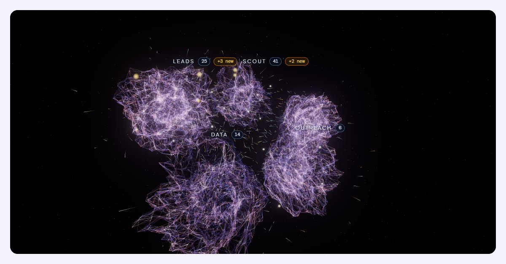
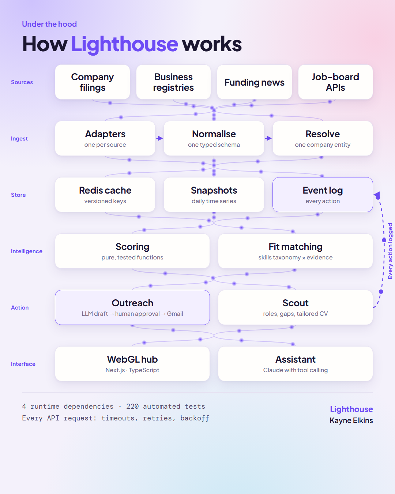

Talent intelligence
Lighthouse
A hub that spots companies under hiring pressure before they advertise a role, finds contract roles for me, and drafts the outreach. Nothing gets sent until I've read it and approved it.

More about Lighthouse
The best technical recruiting happens before the requisition exists. I used to do that by hand: reading funding news, watching careers pages, spotting who was about to have more roles than recruiters. Lighthouse does the legwork so I can spend the time on judgement.
- Leads scores companies on how many open technical roles each in-house recruiter is carrying, how fast hiring is accelerating, recent funding and geographic spread.
- Scout finds contract and permanent roles across six sources and scores each against my own experience, showing the gaps as well as the matches.
- Outreach drafts from a lead's own data. I approve, then it sends from my mailbox and tracks replies.
- Data reports on its own records: freshness, rate limits, response rates, rejection reasons.
Some decisions I'm proud of: every lead carries the argument against it. Every panel shows how old its data is. It never invents a contact and never guesses a day rate. It doesn't scrape LinkedIn.

The repository is private because it holds real search data. A demo mode runs on invented data and I'm happy to walk you through it live.
Next.jsTypeScriptWebGLRedisClaude APIGmail APIVercel200+ tests